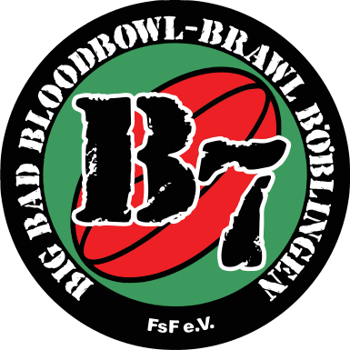

Blood Bowl tournament field manual

B7 // 2026 season
The B7 Weekend Briefing
Rules, match-day timing, and venue intel in one fun tournament handout built for sharing.
Resurrection
Swiss pairing
6 rounds
600k roster build
Section 01
Core Rules
Official framework
The Code of Conduct
The B7 tournament uses the official Blood Bowl 3 2025 Rulebook together with Death Zone, pages 90 to 97. All participants play under those core rules plus the tournament protocols summarized below.
- Blood Bowl 3 Rulebook 2025
- Death Zone pp. 90-97
Format
Tournament Format
Resurrection
Injuries and deaths do not carry over. Teams reset before each game and there is no player development between rounds.
Swiss Pairing
Round 1 is random. Later rounds pair coaches with similar records, with rematches avoided whenever possible.
Scoring
Scoring and Standings
4
Win
2
Draw
0
Loss
Tiebreaker hierarchy
- Head-to-head result
- Touchdown difference
- Casualty difference
- Team value of the roster
- Strength of schedule
Section 04
Team Draft and Building
Skill Package A is free and does not count against the budget.
| Constraint | Requirement |
|---|---|
| Budget | 600,000 Copper Crowns |
| Team Size | Minimum 7, maximum 11 players |
| Linemen | Any number allowed |
| Non-linemen | Up to 4 positionals, while respecting roster limits |
| Rerolls | Cost double the normal price |
| Inducements | Allowed as listed in Death Zone, page 93 |
Tier System
Skill Packages and Tiers
Each team receives a free skill package based on the strength of its race. A single player may receive no more than one additional skill.
Tier I
1 Primary Skill
Old World Alliance, Skaven, Amazon, Wood Elves, High Elves, Union Elves
Tier II
2 Primary Skills
Underworld, Dark Elves, Norse, Chaos Dwarfs, Lizardmen, Slann, Vampires, Shambling Undead
Tier III
3 Primary Skills
Humans, Chaos Renegades, Chaos, Tomb Kings, Necromantic, Imperial Nobility, Orcs, Khorne, Nurgle, Dwarves, Bretonian
Tier IV
4 Skills, 1 may be secondary
Snotlings, Black Orcs, Gnomes, Ogres, Goblins, Halflings
Section 03
Ruleset Fine Print
01
Star Players and Inducements
Star players, mercenaries, and special cards are not allowed. Legal inducements follow Death Zone page 93.
02
Kick-off Clarifications
For kick-off ball scatter, roll 2D6 and use the lower result. On the BB2025 kick-off table, replace D3+3 with D3+1.
03
Pairing and Tiebreakers
After round 1, coaches are paired by similar record. Ties are broken by head-to-head, touchdown difference, casualty difference, team value, and strength of schedule.
Section 02
Official Schedule
Tournament day
09:00-09:45
Start
Registration
Check-in, roster verification, and player pack pickup before the opening kick-off.
Tournament day
09:45-09:55
Briefing
Welcome and rules briefing
Final clarifications on rules, schedule flow, and table logistics.
Tournament day
10:00-11:00
R1 live
Round 1
The opening Swiss block sets the tone for the rest of the tournament day.
Tournament day
11:05-12:05
Round 2
Round 2
Every result reshapes the pairings and table order across the field.
Tournament day
12:10-13:10
Round 3
Round 3
Every result reshapes the pairings and table order across the field.
Tournament day
13:10-13:55
Break
Lunch break (45 minutes)
45 minutes to refuel, reset, and compare the standings before the afternoon block.
Tournament day
14:00-15:00
Round 4
Round 4
This is where the leaders, chasers, and final podium races really separate.
Tournament day
15:05-16:05
Round 5
Round 5
This is where the leaders, chasers, and final podium races really separate.
Tournament day
16:10-17:10
Championship round
Round 6
The final kick-off decides the title, placings, and every remaining tiebreak.
Tournament day
17:10-17:25
Closing ceremony
Final standings and awards
Final standings, awards, and the official end cap to tournament day.
Section 03
Location Intel
Coordinates
Auryn Boeblingen
Murkenbachweg 120 71034 Boeblingen GermanyAuryn is the staging ground for the B7 2026 edition. Find the address, travel options, parking, and sleeping plans in one compact broadcast-style view.
Map: https://www.openstreetmap.org/?mlat=48.6738147&mlon=9.0384543#map=18/48.6738147/9.0384543
Parking logistics
Arrival by car
Front sector
Direct access to the entrance. Limited number of spaces right by the venue.
Street perimeter
Additional parking is available along Wolf-Hirth-Strasse.
Free parking for registered participants during the tournament window.
Travel notes
How to get in
- The nearest airports are Stuttgart at 20 km and Frankfurt at 220 km.
- From Stuttgart airport you can take S-Bahn line 2 or 3 to Boeblingen; the trip takes roughly one hour by train.
- Recommended stays are the City Hotel or the V8 Hotel in Boeblingen.
- Additional route notes cover the way from the airport to the hotel and from the hotel onward to the BBG.
Overnight deployment
Places to stay
If you arrive the night before or do not want to head back right after the event, there are two straightforward options.
Sleep at the venue
Stay on site with a sleeping bag and mat. Showers are available and the gaming floor stays close.
Hotels in Boeblingen
- V8 Hotel Motorworld
- B&B Hotel
- City Hotel
Depending on the hotel, travel time to the venue is usually under 5 minutes.